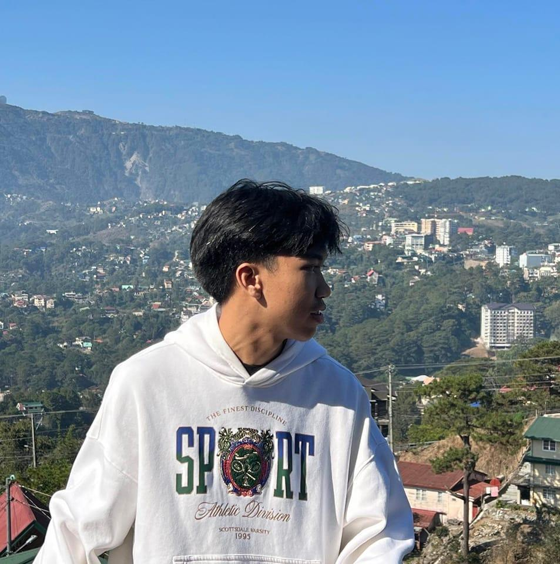
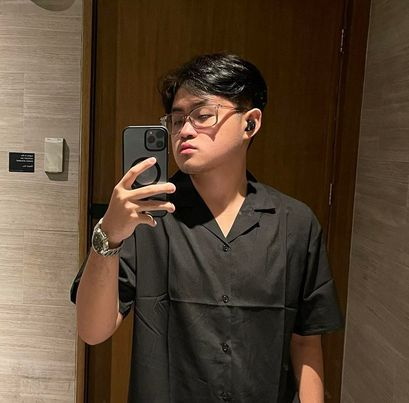
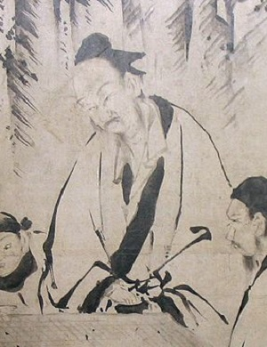
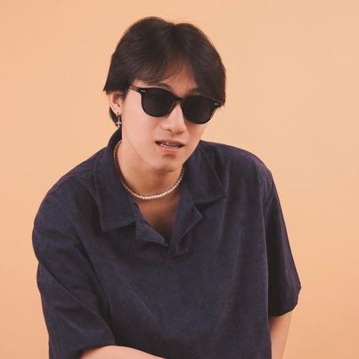

REFERENCES
Japense Art
Cypress Trees, by Kano Eitoku
https://global.canon/en/tsuzuri/works/64.html
https://artsandculture.google.com/asset/WgG8VxnsSPYalQ
Pine Trees (Shorin-zu-byobu) – theartwolf
Pine Trees by Hasegawa Tōhaku | DailyArt Magazine | Art History
https://www.britannica.com/biography/Hasegawa-Tohaku
Pine Trees (Shorin-zu-byobu) – theartwolf
Katsushika Hokusai | South Wind, Clear Sky (Gaifū kaisei), also known as Red Fuji, from the series Thirty-six Views of Mount Fuji (Fugaku sanjūrokkei) | Japan | Edo period (1615–1868) | The Metropolitan Museum of Art (metmuseum.org) Why is Hokusai's Red Fuji (South Wind, Clear Sky) so famous? - niood
https://global.canon/en/tsuzuri/works/64.html
https://global.canon/en/tsuzuri/works/64.html
Miyamoto Musashi Killing A Giant Nue - Utagawa Kuniyoshi (歌川 国芳) - Canvas Prints by
Utagawa Yoshitora | Buy Posters, Frames, Canvas & Digital Art Prints | Small, Compact,
Medium and Large Variants (tallengestore.com)
Kamakura Daibutsu (Great Buddha) | Kanagawa Attractions | Travel Japan | JNTO
American
https://leon-gallery.com/auctions/lot/The-Asian-Cultural-Council-Auction-2022/21/62
https://epa.culturalcenter.gov.ph/3/82/2240/
Contemporary
The 10 most significant paintings of Elmer Borlongan’s 25 years | ABS-CBN News
https://epa.culturalcenter.gov.ph/3/82/2193/
Post Col
https://www.google.com/url?sa=i&url=https%3A%2F%2Fwww.pinterest.ph%2Fpin%2Fthe-
art-of-carlos-botong-francisco--667729082273265485%2F&p
sig=AOvVaw1wej6LfYZn5h83IyShkXeF&ust=1713979906816000&source=images&
=vfe&opi=89978449&ved=0CBIQjRxqFwoTCNCHhu7u2IUDFQAAAAAdAAAAABAE
https://leon-gallery.com/news/blog/660360-heroic-dna-botong-bayani-bayanihan
https://www.roots.gov.sg/stories-landing/stories/the-singapore-story-through-60-objects/colonial/espana-y-filipinas/story
https://philippinestudies.uk/mapping/items/show/29124
https://philippinestudies.uk/mapping/items/show/29124
Pre con
https://www.yodisphere.com/2021/01/the-angono-binangonan-petroglyphs.html
https://www.wmf.org/project/angono-petroglyphs
https://artesdelasfilipinas.com/archives/50/the-manunggul-jar-as-a-vessel-of-history
Spanish
https://az333959.vo.msecnd.net/images-4/tampuhan-juan-luna-1895-7869d1c2.jpg
{kind=link}
https://az333959.vo.msecnd.net/images-4/tampuhan-juan-luna-1895-7869d1c2.jpg
Philippine Cinematic Video
https://www.youtube.com/watch?v=vbrJT1RL20A&t=51s
Japanese Cinematic Video
https://youtu.be/aNC3UOYOejI?si=z5RVhtpKZjsDnZdf
Artists’ Photos
Philippine Art
Juan Luna
https://en.wikipedia.org/wiki/Juan_Luna
Félix Resurrección Hidalgo
https://en.wikipedia.org/wiki/F%C3%A9lix_Resurrecci%C3%B3n_Hidalgo
Fernando Amorsolo
https://en.wikipedia.org/wiki/Fernando_Amorsolo
Guillermo Tolentino
https://en.wikipedia.org/wiki/Fernando_Amorsolo
Carlos "Botong" Francisco
https://en.wikipedia.org/wiki/Fernando_Amorsolo
Fernando Zóbel de Ayala
https://en.wikipedia.org/wiki/Fernando_Amorsolo
Elmer Borlongan
https://lifestyleasia-onemega.com/lifestyle-asia-exclusive-conversation-artist-elmer-borlongan-work-new-exhibit-approach-painting/
Ronald Ventura
https://lifestyleasia-onemega.com/lifestyle-asia-exclusive-conversation-artist-elmer-borlongan-work-new-exhibit-approach-painting/
Japanese Art
Kano Eitoku
https://www.wikiart.org/en/kano-eitoku
Katsushika Hokusai
https://www.theartstory.org/artist/hokusai-katsushika/
Utagawa Kuniyoshi https://www.ndl.go.jp/landmarks/e/artists/utagawa-kuniyoshi/

Andrade Kaine | Japanese Art Researcher

Buena, Aven | Lead Developer & Japanese Art Researcher
Costalos, Jirah | Assistant Developer, Documentator & Group Leader
Espira, Jayvee | Philippine Art Researcher & Time Keeper

Meneses, Ramon Jim | Philippine Art Researcher & Secretary
Raveche, Marlon Joseph | Japanese Art Researcher

Salvador, Lance | Philippine Art Researcher
